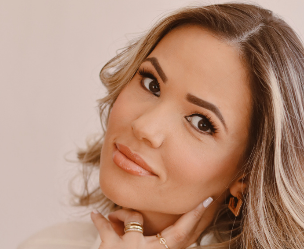
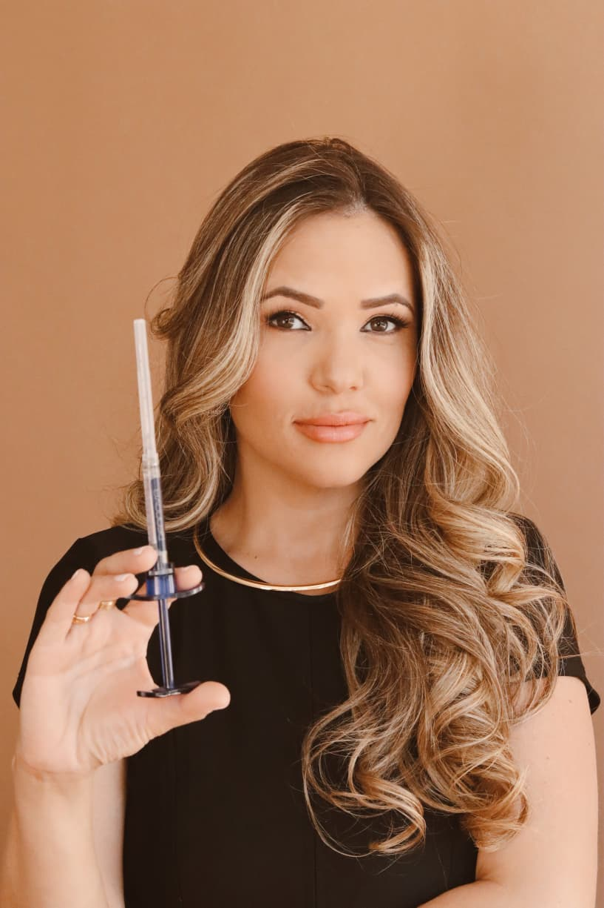

Realce sua beleza única com técnicas precisas, segurança e arte médica especializada
Quero uma Avaliação Personalizada

Cirurgiã-Dentista com formação avançada em Harmonização Orofacial.
"Meu objetivo é proporcionar resultados naturais que respeitem a individualidade de cada paciente."
Remoção da gordura localizada na região do queixo e pescoço, devolvendo contorno e definição ao perfil facial.
Volumização de maçãs, olheiras e contorno facial com ácido hialurônico.
Preenchimento labial com técnica natural e proporção harmoniosa.
Suavização de rugas de expressão e prevenção de novas linhas.
Estímulo natural de colágeno para rejuvenescimento facial.
Correção e equilíbrio estético das orelhas, devolvendo proporção e harmonia ao rosto.
Utilizamos anestésicos tópicos e técnicas de conforto para minimizar qualquer desconforto. A maioria dos pacientes refere apenas sensação de leve pressão.
Depende do procedimento: preenchimentos duram de 12 a 18 meses, toxina botulínica de 4 a 6 meses. Fatores individuais como metabolismo podem influenciar.
Nosso princípio é a naturalidade. Trabalhamos com técnicas conservadoras que respeitam a anatomia facial de cada paciente.
dra.alexsandramorais@gmail.com
Av. Valdemar Fernal, 80, 4º andar, Oliveira-MG
Segunda a Sexta: 9h-18h | Sábado: 9h-13h